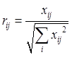
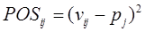

TOPSIS Ranking Method
TOPSIS (Technique for Order of Preference by Similarity to Ideal Solution) is a multi-criteria ranking method that employs the concepts of the positive ideal point (best objective values for all criteria) and the negative ideal point (worst objective values in all criteria) in the objective domain. Alternatives are ranked based on the shortest geometric distance from the positive ideal point and the longest geometric distance from the negative ideal point in terms of the objective values. For the distance calculations of TOPSIS to be valid all objectives must be normalized such that their values are all in the same range. The final weight factors calculated as described previously are applied to each objective value when making distance calculations and then comparing alternatives.
The Overall Score values of each alternative are calculated as follows:
a. All thresholds are evaluated; if any "Must Have" thresholds are violated for a given data point, its Overall Score value is set to 0.0 independent of the objective values
b. Individual parameter objective values are calculated as follows ("higher = better" formulation is used):
c. Raw objective values for each objective parameter are scaled to be within [1...100] range - this is a scaled parameter objective value
d. For each objective parameter (data column), the sum of squares is calculated
e. Each objective value is normalized by the square root of sum of squares for that column - this is a normalized objective value

f. The final weight factor calculated as described previously is applied to each normalized objective - this is a normalized and weighted objective value
g. For each objective parameter (data column), min and max normalized and weighted objective values are determined; these values form the Positive Ideal Point (maximum objective values), and the Negative ideal Point (minimum objective values)
h. For each objective value (calculated in "e"), the single axis distances from the Positive and Negative Ideal Points are calculated, and then squared (POSij and NEGij)

i. For each data point (row), the Euclidian distances from the Positive and Negative Ideal Points are calculated as the square root of the sums POSij and NEGij
j. The TOPSIS raw score for each data point is calculated as
k. Raw scores for all data points are scaled to be within [1...100] range - this is the Overall Score displayed in the table (recall that if the data point has any "Must Have" thresholds violated, its Overall Score value is set to 0.0). The Overall Score of each data point also becomes the score of the top level (root) parameter group.
l. For each parameter group other than the top level (root) group, the score is calculated as the sum of scores of all sub-groups and parameters. No scaling is done for group scores - only the sum of all children scores is taken as the score.